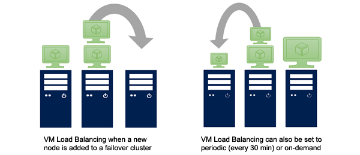

+1 876-###-####
+1 876-###-####
Route Service Infrastructure
IXPs provide route server infrastructure. Route servers act as centralized routers that facilitate the exchange of routing information among participating networks. They simplify the peering process by allowing networks to exchange routes with multiple peers through a single connection.
Deployed redundant route server infrastructure. Redundant route servers ensure that if one route server fails, there is a backup server ready to take over the routing functions. This redundancy ensures the continuous exchange of routing information among participating networks, reducing the impact of route server failures.
Security and DDoS Mitigation
Implemented security measures to protect the infrastructure and the participating networks. This includes deploying DDoS mitigation systems, implementing access controls, and monitoring for any malicious activities.
Infrastructure can be leveraged for failover and load balancing purposes. Networks can configure their routing policies to prioritize or distribute traffic across multiple peering connections at the IXP. This allows for efficient utilization of available network resources, load balancing of traffic, and automatic failover to alternate connections in case of failures.

Traffic Monitoring and Analytics
IXP provides traffic monitoring and analytics services to help participants gain insights into their peering connections.
This includes measuring traffic volumes, analyzing traffic patterns, monitoring latency, packet loss, and providing reports on network performance.
IXP offers network connectivity options to its participants. This includes high-speed interconnections and diverse connectivity options, such as Ethernet, optical fibers, or other suitable transmission technologies.
YOUR DATA IS SAFE WITH US
JOIN US TODAY!
REGISTER